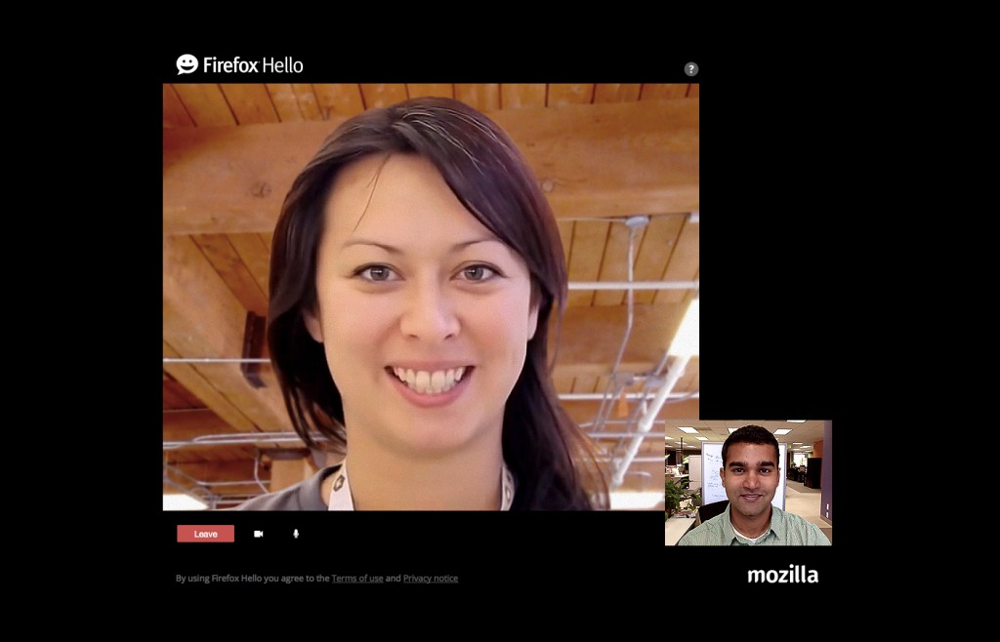
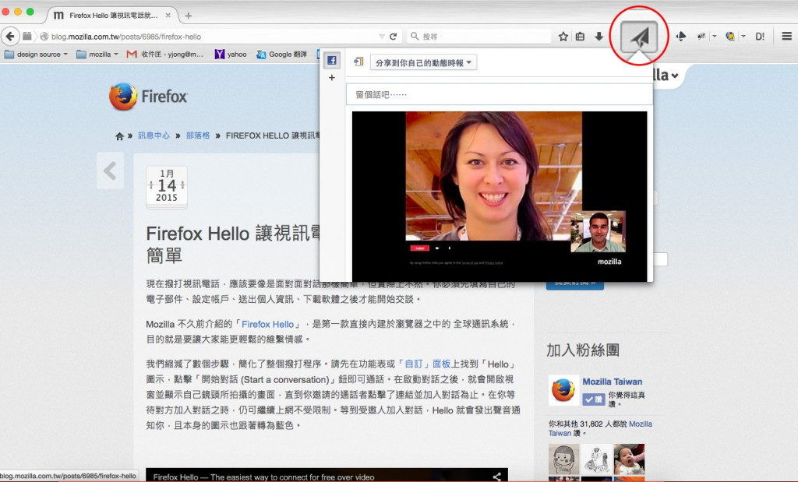

Firefox 讓你能控制自己的線上生活，並根據己身需要而自訂 Web 經驗。我們直接在 Firefox 內建 Web App、視訊電話、社交分享等功能，讓你能輕鬆享受 Web 上的所有美好事物。
Firefox 已內建三項新功能：1). 首次直接於瀏覽器中內建的全球通訊系統「Firefox Hello」，2).社交功能可透過自己最愛的社交網站，輕鬆與親友分享內容，3). Firefox Marketplace 測試版 (Beta) 可測試 Web App。均可到 Firefox 的工具列或「自訂」模式中找到。
Firefox Hello ─ 更簡單的溝通方式
我們剛介紹的 Firefox Hello，也是首次直接內建於瀏覽器上的全球通訊系統，除了可輕鬆於線上撥打語音＼視訊電話之外，也提供更友善的隱私功能。

Firefox Hello 的對話視窗
Firefox Hello 免費提供使用，且不須再登入任何帳戶。地球上任何人只要使用支援 WebRTC 的瀏覽器 (如 Firefox、Chrome、Opera)，都能透過 Firefox Hello 相互聯繫。在此之前，你必須先提供電子郵件位址又加上個人資訊，甚至還要再下載其他軟體，才能開始撥打視訊電話。
Mozilla 現在簡化了許多步驟，讓你能更輕鬆撥出電話，也能儲存並命名自己最愛的對話記錄。往後只要輕點一下就能迅速再次撥號給同一人。可參閱本文以進一步 了解 Firefox Hello。
Firefox Share ─ 經由你最愛的社交網路分享 Web
Firefox 現亦整合了你最愛用的所有社交網路，任一網站均可啟用你的社交網路並分享 Web 內容，完全不用跳開現正瀏覽中的網頁。

透過「紙飛機」的圖示就能輕鬆分享網頁內容
若要新增 Firefox 中的「分享 (Share)」功能，請先到「Share Activation」頁面，點擊你想使用社交網站的「立刻啟用 (Activate Now)」按鈕。 現在已能使用的社交網站包含 Facebook、Twitter、Tumblr、Linked In、Google+。
Firefox Marketplace 測試版 (Beta) ─ 協助測試 App
Firefox Marketplace Beta 現已開放於 Windows、Mac、Linux 的桌面版進行測試。以 Open Web 技術打造的 Firefox Marketplace Beta，將跨平台為開發者提供靈活的創造力，並讓消費者能享受一致的 App 使用經驗。請透過支援頁面以進一步了解該如何使用 Firefox Marketplace Beta。
更多資訊：
原文連結：Firefox Enables You to Experience and Share More on the Web